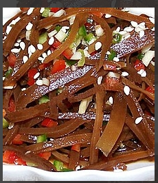
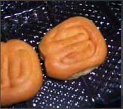

通信1902班 201916180215 黄家豪
介绍：我是来自湖北襄阳的一个零零后，性格开朗，喜欢看看书，小说名著都挺喜欢。
照片：
家乡美食介绍：
NO.1孔明菜，它是四大名腌菜之一，这个菜传说是当年刘备三顾茅庐时诸葛亮用来招待刘备的小菜，后来因为此菜容易携带，故而在打仗时就经常吃这个菜。现在大头菜运用了现代工艺制作包装，更容易携带，也因此改了一个更好听的名字叫孔明菜，买回去后炒肉丝或者是凉拌、炖肉都别有一番风味。
NO.2金刚酥,是一种本地小吃，由于襄阳古时是兵家必争之地，故相传在城中备粮时，用金刚酥来当作口粮，它更容易保存和运输。现代制作的金刚酥口味多样，入口清香酥脆，可以用来当平常点心，而且价格便宜，赠送朋友很好。
NO.3野生葛粉,是一种用水冲泡的小吃，类似藕粉，它含有丰富的微量元素，有很好的清火和保健作用，是一种绿色健康食品。